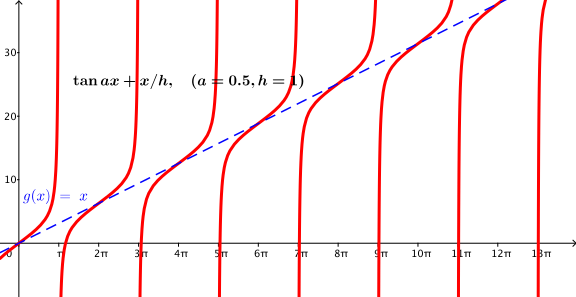

3.6. Bir Uçta Isı Konveksiyonu
Kayıt Tarihi:
Son Güncelleme:
Çubuğun bir uç noktası bir şekilde sabit sıcaklıkta tutuluyor ve diğer uç noktasından ortam ile ısı alışverişine izin veriliyor olsun, böyle bir ısı iletimine ısı konveksiyonu denir. Bu derste ısı konveksiyonu problemini tartışacağız.
Anahtar Kelimeler: değişkenlere ayırma · Isı denklemi · ısı konveksiyonu · sınır değer problemiŞimdi çubuğun $x=0$ noktasındaki ucunda sıcaklığın $T_1\geq0$ olarak sabit tutulduğunu, $x=a$ noktasındaki diğer ucunda ise ortam ile ısı iletimi gerçekleştiğini düşünelim. Newton'un soğuma yasasına göre bu uçtaki ısı değişim oranı, ortam ile çubuğun sıcaklıkları farkıyla orantılıdır. Yani $h$ materyale bağlı olan bir sabit ve ortam sıcaklığı $T_2\geq0$ olmak üzere $$u_x(a,t)=-h[u(a,t)-T_2]$$ eşitliği sağlanır. Böyle bir ısı alışverişine konveksiyon denir, bu konveksiyon durumundaki sınır değer problemimiz $$\begin{array}{ll} u_{t}=ku_{xx} ,& \quad(x,t)\in D\text{ için}\\ u(0,t)=T_1, & \quad t\geq0\text{ için}\\ u_x(a,t)=h[T_2-u(a,t)], & \quad t\geq0\text{ için} \\ u(x,0)=f(x), & \quad0\leq x\leq a \text{ için} \end{array}$$ biçimindedir. Buradaki $f$ fonksiyonu negatif olmayan, sürekli, türevi parçalı sürekli ve $f(0)=T_1$ ile $f'(a)=h[T_2-f(a)]$ eşitliklerini sağlayan bir fonksiyondur.
Uç nokta koşulları lineer olmadığından daha önce yaptığımız gibi önce denge durumu çözümünü, daha sonra da geçici çözümü araştıracağız. Denge durumu çözümü olan $U$ fonksiyonu $$\begin{array}{l} 0=kU''\\ U(0)=T_1\\ U'(a)=h[T_2-U(a)] \end{array}$$ eşitliklerini sağlar. Buradan $$U(x)=\frac{h(T_2-T_1)}{1+ha}x+T_1$$ olduğunu kolayca görebiliriz.
Geçici çözüm için de $v:=u-U$ tanımını yaparsak $x=a$ uç noktasındaki koşul $$v_x(a,t)=u_x(a,t)-U'(a)=h[T_2-u(a,t)]-h[T_2-U(a)]=-h[u(a,t)-U(a) ]=-hv(a,t)$$ olacağından $v$ geçici çözümünün$$\begin{array}{ll} v_{t}=kv_{xx} ,& \quad(x,t)\in D\text{ için}\\ v(0,t)=0, & \quad t\geq0\text{ için}\\ v_x(a,t)=-hv(a,t), & \quad t\geq0\text{ için} \\ v(x,0)=f(x)-U(x), & \quad0\leq x\leq a \text{ için} \end{array}$$ sınır değer problemini sağladığını görürüz. Bu problemi çözmek için değişkenlere ayırma yöntemini kullanırsak $$kX''+\lambda X=0\quad\text{ve}\quad T'+\lambda T=0$$ denklemleri ile $$X(0)=0\quad\text{ve}\quad X'(a)=-hX(a)$$ koşullarını elde ederiz. Sabit olmayan çözümlerin sadece $\lambda>0$ için mümkün olduğu açıktır, bu durumda $\mu:=\lambda/k$ olarak tanımlarsak çözüm $$X(x)=A\sin\sqrt{\mu}\,x+B\cos\sqrt{\mu}\,x$$ olarak bulunur. $X(0)=0$ ve $X'(a)=-hX(a)$ koşulları kullanılırsa $$B=0\quad\text{ve}\quad A\sqrt{\mu}\cos\sqrt{\mu}\,a=-h\sin\sqrt{\mu}\,a$$ eşitliklerine varılır. $h>0$ olduğundan bu eşitlik bize $\cos\sqrt{\mu}\,a\neq0$ olduğunu gösterir, böylece de $$\tan\sqrt{\mu}\,a=-\frac{\sqrt{\mu}}{h}$$ eşitliğine varırız. Aşağıdaki şekilde de görüldüğü gibi bu denklemin sonsuz sayıda çözümü vardır, her $n\in\mathbb{N}$ için $$\frac{(2n-1)\pi}{2a}<\sqrt{\mu_n}<\frac{n\pi}{a}$$ eşitsizliğini sağlayan tek bir $\mu_n$ sayısı vardır.

Şekil 3.5: $\tan ax+x/h$ fonksiyonunun $a=0.5$ ve $h=1$ için grafiği
Sonuç olarak $T'+\lambda T=0$ denkleminin çözümünü ve $\lambda_n=\mu_nk$ olduğunu hesaba katarsak $c_n$ sayıları keyfi olmak üzere $$c_ne^{-\mu_nkt}\sin\sqrt{\mu_n}\,x$$ biçimindeki terimler ve bunların toplamları ele aldığımız sınır değer problemini ve $v$ fonksiyonu için verdiğimiz uç nokta koşullarını sağlar.
Burada bir sorunumuz var, $\mu_n$ sayılarını nümerik yöntemlerle yaklaşık olarak hesaplayabiliriz ama bunun bize faydası olmaz. Çünkü $\sqrt{\mu_n}$ değerlerinin $n$ doğal sayısının rasyonel katı olmadığı açıktır. Dolayısıyla geçici çözümün başlangıç koşulundan elde edilecek olan sonsuz seri bir Fourier serisi olamaz. Bu yeni çeşit serinin $f-U$ fonksiyonuna düzgün yakınsadığını varsayarak için gerekli $c_n$ katsayılarını bulabiliriz fakat bu düzgün yakınsama kanıtlanmadığı sürece bulduğumuz sayıları sağlamasını yaparak kullanmalıyız. Bu yeni probleme daha sonra tekrar değinip çözümünü elde edeceğiz, şimdiye kadar elde ettiğimiz bilgilerle geçici çözümün varlığına ulaşamıyoruz.
3.5. Farklı Uç Nokta Koşulları
Fourier Analizi
3.7. Zamandan Bağımsız Problemler